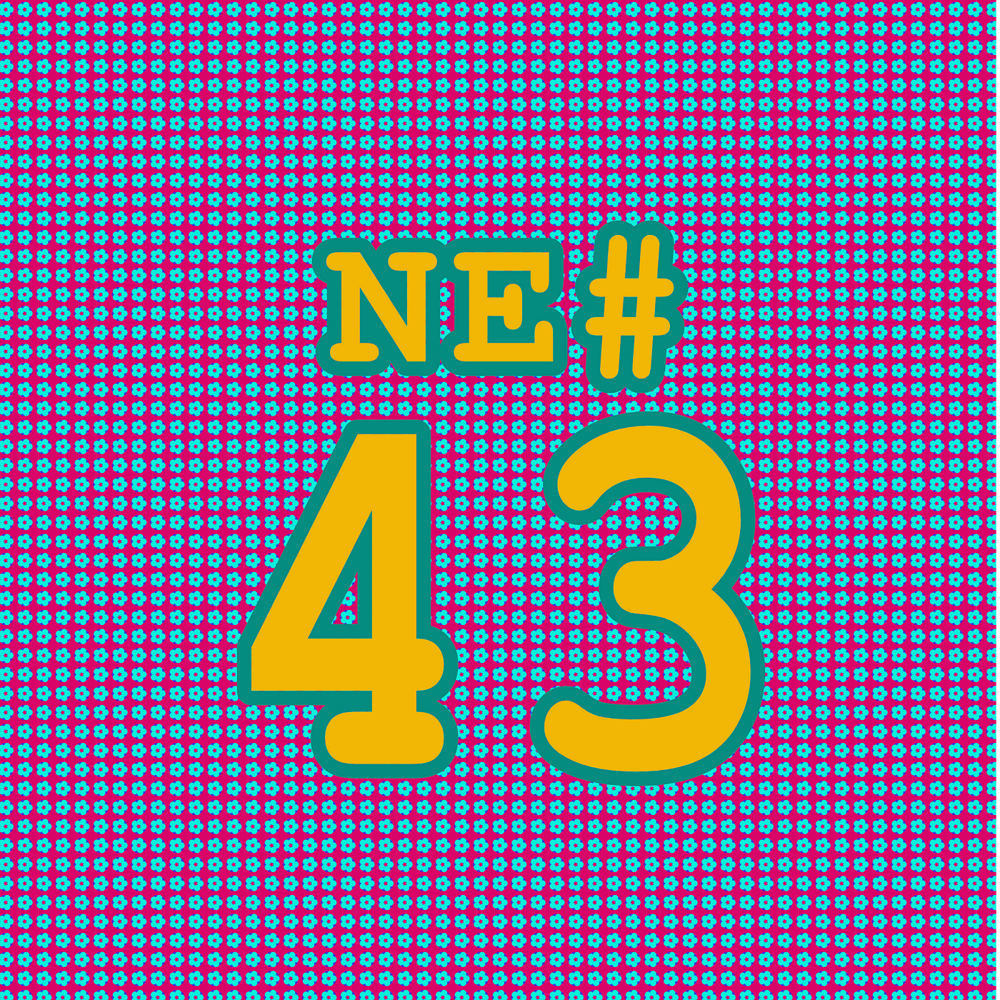
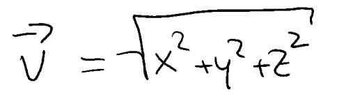
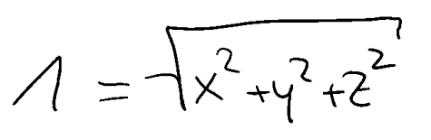
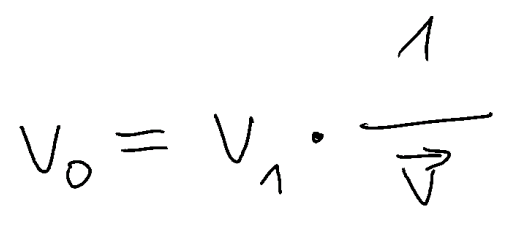

Die Nerd Enzyklopädie 43 - 0x5f3759df
In der Informationstechnologie gibt es zwei wichtige Innovationstreiber: Die Porno-Industrie und die Spiele-Industrie. Quake III ist ein wegweisender Vertreter der Spiele-Industrie. Der Pionier unter den Ego-Shootern wurde 1999 veröffentlicht, eroberte die Herzen der spielenden Gemeinde im Sturm und glänzte mit für die damaligen Verhältnisse herausragenden optischen Effekten. Und das trotz vergleichsweise geringer Anforderungen an die Hardware.

Nerd-Enzyklopädie #43
Um das zu ermöglichen nutzte Quake die „fast inverse square root“ (zu Deutsch klingt es etwas sperriger: „Schnelle umgekehrte Quadratwurzel”).
Aber… warum? Um in einer dreidimensionalen Welt bestimmte physikalische Effekt zu simulieren, nutzt man Vektoren. Nehmen wir z.B. die Berechnung von Lichtreflektionen: Um den Einfalls- und Ausfallswinkel auf einer beliebigen Fläche korrekt zu berechnen, benötigt man einen Vektor, genau genommen einen normierten Vektor.
Die Formel für die Berechnung des Betrages eines Vektor (sprich seiner „Länge“) sieht folgendermaßen aus:

Wer in der Schule gut aufgepasst hat, sollte davon nicht sonderlich beeindruckt sein. Es handelt sich im Prinzip um den Satz des Pythagoras auf Steroiden.
Ein normierter Vektor hat einen Betrag von 1, die Richtung bleibt unverändert:

Um einen Vektor zu normieren, multipliziert man ihm mit dem Kehrwert seines Betrages:

Diese Formel muss millionenfach ausgeführt werden, wenn man eine Lichtbrechung mit einer halbwegs ansehnlichen Qualität in einem Spiel erzeugen möchte.
Für die Summen und Potenzen (das sind ja letztlich auch nur Summen) ist das kein Problem, wohl aber für die Wurzel bzw. den Kehrwert der Wurzel — die inverse square root.
Anfangs behalf man sich mit riesigen Tabellen, die die Ergebnisse zahlreicher Berechnungen enthielten. Das sprengt irgendwann den Rahmen und man musste eine andere Lösung finden. Und diese ist und war elegant und rebellisch zugleich — der „fast inverse square root“ Algorithmus:
float Q_rsqrt( float number )
{
long i;
float x2, y;
const float threehalfs = 1.5F;
x2 = number * 0.5F;
y = number;
i = * ( long * ) &y; // evil floating point bit level hacking
i = 0x5f3759df - ( i >> 1 ); // what the fuck?
y = * ( float * ) &i; y = y * ( threehalfs - ( x2 * y * y ) ); // 1st iteration
// y = y * ( threehalfs - ( x2 * y * y ) ); // 2nd iteration, this can be removed
return y;
}
In dieser Funktion passieren einige spannende, um nicht zu sagen verrückte Dinge. Wie zum Beispiel der „evil floating point bit hack“.
Dazu ein kurzer Ausflug in das mysteriöse Reich der Fließkommazahlen: Diese zeichnen sich durch eine spezielle Art der Speicherung aus, damit in unseren binär geprägten Computern (Nullen und Einsen) auch Dezimalzahlen verarbeiten werden können. Dazu wird die Dezimalzahl als Kombination von Vorzeichen, Exponent und Mantisse abgespeichert: Das IEEE-754 Format!
Der Nachteil: Beim Zurückrechnen kann es zu Ungenauigkeiten kommen. So wird der Wert 3,3 nach IEEE-754 binär abgespeichert:
01000001001000011001100110011010
Berechnet man diesen Wert zurück in ein Dezimalzahl, erhält man:
3.2999999523162841796875
Nicht schön, aber selten und meistens auch ausreichend genau.
Der „evil floating point bit hack“ schnappt sich den binären Wert der Fließkommazahl und interpretiert ihn schlicht als Ganzzahl, ohne die aufwendige Berechnung nach IEEE-754. Aus 3,3 wird damit der „evil integer“ 1.079.194.419.
Als nächstes kommt es zu einer unter Fachleuten auch als What-The-Fuck-Transformation bezeichneten What-The-Fuck-Transformation. Unser „evil integer“ wird zunächst per Bitshift halbiert (ein bitweises verschieben nach links oder rechts kommt einer Multiplikation oder Division mit 2 gleich — probier es mal aus!). Das Ergebnis wird von einer höchstseltsamen Konstante abgezogen. Da ist sie — sie ist wunderschön:
0x5f3759df
Der dezimale Wert dieser mathematischen Grazie ist 1.597.463.007 — nicht sonderlich spannend. Behandelt man den Wert aber ebenfalls als Fließkommazahl nach IEEE-754, erhält man diese Kombination aus Exponent und Mantisse:
0.10111110.01101110101100111011111
Daraus ergibt sich ein Exponent von 63 und die Mantisse mit 1,43243014812469482421875. Zusammen errechnet sich daraus die ziemlich große Zahl: 13.211.836.172.961.054.720 Und das ist eine ziemlich gute Annäherung an die Wurzel von 2¹²⁷, nämlich 13.043.817.825.332.782.212,349…
Das Ergebnis dieser wahnwitzigen Operation wird nun über einen umgedrehten „evil floating point hack“ zurück in eine Fließkommazahl „umgewandelt“.
Abschließend findet noch ein weiterer kleiner Trick aus der wunderbaren Welt der Mathematik Anwendung: Mittels des Newton-Verfahrens erfolgt eine Korrektur des bisherigen Ergebnisses.
Schließlich kann die Funktion den Kehrwert einer Wurzel in etwa genauso gut bestimmen, wie eine konventionelle Berechnung, aber weitaus schneller.
Diese geniale Optimierung der Berechnung wird übrigens oft alleine John Carmack zugeschrieben, einem der Schöpfer von Quake III. Tatsächlich führen die Wurzeln (no pun intended…) aber viel weiter zurück. So basiert die Funktion wohl auf den Arbeiten vieler schlauer Köpfe.
Bereits 1974 tauchte eine ähnliche Routine im Quellcode für den PDP-11 auf [TUHS1]. In einem Quellcode von 1993 findet sich ein Kommentar mit dem Verweis auf eine wissenschaftliche Arbeit von William Kahan und K.C. Ng aus 1983, in dem sie genau diese optimierte Methode beschreiben. Kahan gilt übrigens als „Architekt“ der IEEE-Fließkommazahlen-Aritmetik. 1997 präsentierte Jim Blinn in den „Floating-point tricks“ eine vergleichbare Funktion, dort noch ohne die „magische Konstante“ [IEEE2].
Aber zurück zu John Carnack, der die Urheberschaft ganz explizit von sich wies:
Not me, and I don’t think it is Michael [Abrash]. Terje Matheson perhaps?
~John Carmack, per E-Mail in 2004
Der nächste „Verdächtige“ wäre Gary Tarolli, NVidia-Mitarbeiter der ersten Stunde und Mitbegründer von 3Dfx. Dieser räumte ein, Mitte der 1990er Jahre die besagte Funktion genutzt und vielleicht sogar optimiert zu haben, weißt aber die eigentliche Urheberschaft ebenfalls von sich [BEYON1].
Die Spur führt schließlich zu Greg Walsh, Ende der 1980er Jahre Entwickler bei der Ardent Computer Corporation. Inspiriert von der Arbeit seines Kollegen, dem Informatiker und Mathematiker Cleve Moler, Autor von MatLab, war es wohl Walsh, der die berüchtigte Funktion entwickelte.
Übrigens: Auch zwischen Moler und Kahan gibt es eine Verbindung. Zwar ist nicht klar wie eng die Bekanntschaft war, aber sie sind sich zumindest einmal über den Weg gelaufen [MATH1].
Zurück zu Ardent: Das Unternehmen wurde damals unter anderem von Kubota “finanziell unterstützt”, einem japanischen Mischkonzern. Für Kubota arbeitete seinerzeit auch Gary Tarolli! So gelang der Quellcode wohl in die Hände von Tarolli. Die Verbindung zu John Carmack und id Software entstand dann vermutlich über Brian Hook, einem der ersten Angestellten von 3Dfx und später auch Entwickler bei id Software [QUAKE1]. Und so schließt sich der Kreis…
Der Fast Inverse Square Root Algorithmus hat nichts an Faszination eingebüßt, vielleicht aber etwas an Bedeutung. Moderne Computer ermöglichen mittlerweile — dank hoher Leistung und angepasster Befehlssätze — eine sehr schnelle Berechnung von Wurzeln und deren Kehrwerten.
Hinter der mysteriösen Konstante und der merkwürdigen Optimierung steckt also eine verworrene Geschichte und am Ende fast schon der tragische Untergang in die Bedeutungslosigkeit. Wenn das kein Material für einen Nerd-Blockbuster ist…